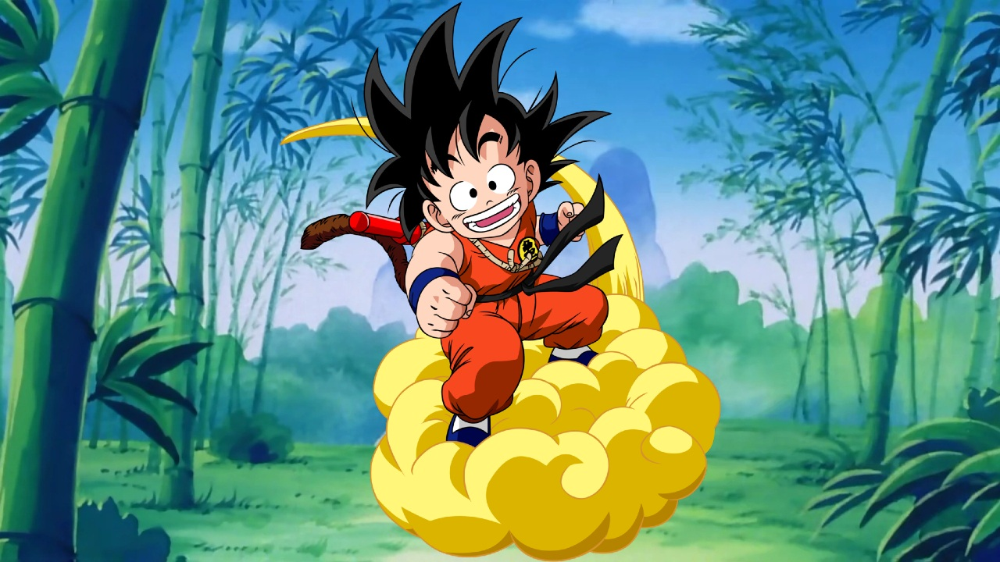

PERSONAJES DRAGON BALL:
Goku (niño)

El protagonista de la serie, un niño de origen misterioso con una fuerza sobrehumana y una cola de mono. Goku es inocente, valiente y siempre está dispuesto a ayudar a los demás. Su mayor motivación es hacerse más fuerte y proteger a sus amigos. Con el tiempo, descubre su origen Saiyajin y la capacidad de transformarse en un gran mono (Ozaru).
Bulma (joven)
Una joven genio inventora y una de las primeras amigas de Goku. Es la creadora del Radar del Dragón, un dispositivo que localiza las Esferas del Dragón. Su personalidad es pragmática y a menudo impulsa el avance de la trama con sus ideas y tecnología.
Krillin (niño)
El mejor amigo de Goku y compañero de entrenamiento bajo la tutela del Maestro Roshi. Aunque al principio es competitivo y algo egoísta, se convierte en un aliado leal y valiente. Krillin no tiene la fuerza de Goku, pero su ingenio y determinación lo convierten en un luchador formidable.
Maestro Roshi
Un maestro legendario de artes marciales, excéntrico y con una inclinación por el humor picante. Es el creador del ataque Kamehameha, que enseña a Goku. Aunque a menudo parece distraído, su sabiduría y habilidades son fundamentales para el desarrollo de Goku y Krillin.
Piccolo Daimaoh
Un antiguo enemigo surgido de Kami-sama, representa la mayor amenaza en la etapa inicial de Dragon Ball. Es un ser despiadado que busca conquistar el mundo y destruir a sus oponentes. Aunque finalmente es derrotado por Goku, su legado continúa a través de su hijo/reencarnación, Piccolo Jr.
N*EPISODIOS DE DRAGON BALL:
La serie original de Dragon Ball, que cubre la niñez de Goku, consta de 153 episodios. Estos episodios fueron emitidos en Japón entre 1986 y 1989 y están basados en el manga de Akira Toriyama. La serie cubre las primeras aventuras de Goku mientras busca las Esferas del Dragón, participa en torneos de artes marciales y enfrenta varios enemigos. Esta primera serie de Dragon Ball está seguida por Dragon Ball Z, que continúa la historia cuando Goku ya es adulto, y otras secuelas como Dragon Ball Super. Los 153 episodios de Dragon Ball están divididos en diferentes arcos argumentales, incluyendo la búsqueda de las Esferas del Dragón, el Torneo de Artes Marciales, y la batalla contra el Demonio Piccolo, entre otros eventos clave de la serie.
CREADOR DE DRAGON BALL:

El creador de Dragon Ball, incluyendo la parte en la que Goku era un niño, es Akira Toriyama. Toriyama es un mangaka japonés que escribió y dibujó el manga original de Dragon Ball, que se publicó por primera vez en 1984 en la revista Weekly Shōnen Jump de la editorial Shueisha. La historia de Dragon Ball comenzó con Goku como un niño que parte en aventuras para encontrar las Esferas del Dragón, con un tono más aventurero y cómico que las sagas posteriores. Toriyama es reconocido no solo por la creación de Dragon Ball, sino también por su estilo artístico único y su habilidad para desarrollar personajes carismáticos y épicas batallas que han influenciado generaciones de fanáticos del anime y manga a nivel mundial. Si bien Dragon Ball fue adaptado a anime por Toei Animation, el personaje y las historias que lo sustentan fueron completamente concebidos por Toriyama. La serie original de Dragon Ball cubre la niñez de Goku y sus primeras batallas, además de sus encuentros con personajes como Bulma, Krillin y el Maestro Roshi, entre otros.
INTRO: OPENING DRAGON BALL
CRADOR DEL OPENING:
El creador del famoso opening de Dragon Ball cuando Goku era niño, titulado "Makafushigi Adventure!" ("冒険でしょでしょ!" en japonés), fue Chikao Ōtsuki. La canción fue compuesta por Tetsuya Komuro, con letra de Yuji Ohno. La canción se convirtió en uno de los openings más icónicos de la historia del anime y fue utilizada durante la emisión de la serie original en 1986. El cantante principal de la versión original de la canción fue Hironobu Kageyama, quien interpretó "Makafushigi Adventure!" y logró capturar la energía y el espíritu aventurero de la serie, lo que contribuyó a la popularidad del opening. La combinación de una melodía pegadiza, la energía enérgica de la voz de Kageyama, y la animación que acompañaba la secuencia hizo que este opening fuera inolvidable para los fans de la serie. Este tema sigue siendo uno de los más recordados de la franquicia Dragon Ball y se asocia estrechamente con la época en la que Goku era un niño y vivía sus primeras aventuras.
SAGAS Y VILLANOS DE DB:
1.Goku vs. Yamcha (Torneo de Artes Marciales)
Goku se enfrenta a Yamcha, un joven con gran habilidad en artes marciales. Esta batalla es uno de los primeros enfrentamientos importantes de Goku en la serie, donde muestra su destreza a pesar de ser un niño.
2.Goku vs. Jackie Chun (Torneo de Artes Marciales)
Durante el primer torneo, Goku se enfrenta al maestro Jackie Chun (quien es en realidad el maestro Roshi disfrazado). Esta es una pelea crucial porque Goku demuestra su habilidad y potencial en combate.
3.Goku vs. Krillin (Torneo de Artes Marciales)
En la segunda edición del torneo de artes marciales, Goku y su amigo Krillin se enfrentan en una de las batallas más significativas. Aunque ambos son amigos, la pelea muestra lo que Goku ha aprendido y su gran destreza.
4.Goku vs. Tien Shinhan (Torneo de Artes Marciales)
En el tercer torneo de artes marciales, Goku se enfrenta a Tien Shinhan, un luchador increíblemente fuerte. Esta batalla es muy intensa, con Tien mostrando habilidades sorprendentes como el "Solar Flare" y el "Tri-Beam."
5.Goku vs. King Piccolo (Transformado)
Esta batalla es crucial, ya que Goku, después de haber entrenado y crecido, enfrenta a un Piccolo aún más poderoso, quien había transformado en una forma más demoníaca para aumentar su fuerza.